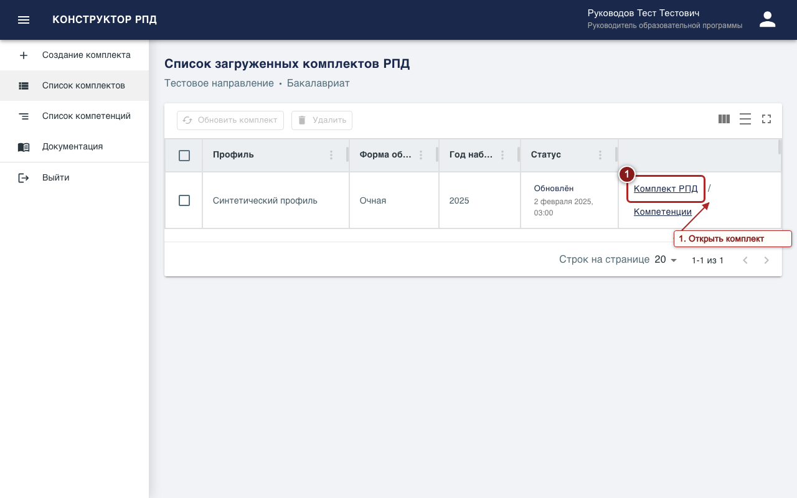
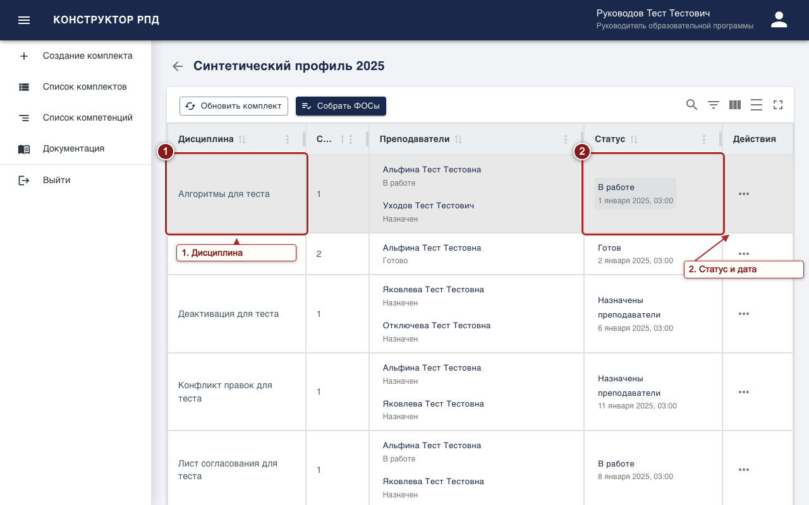
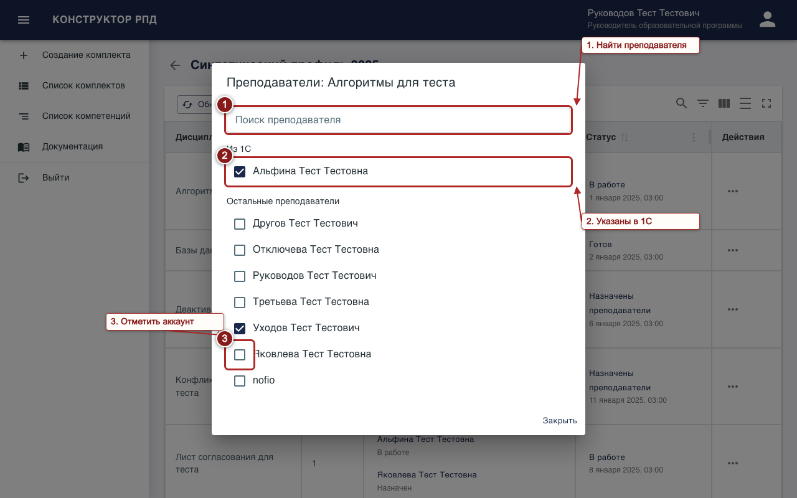
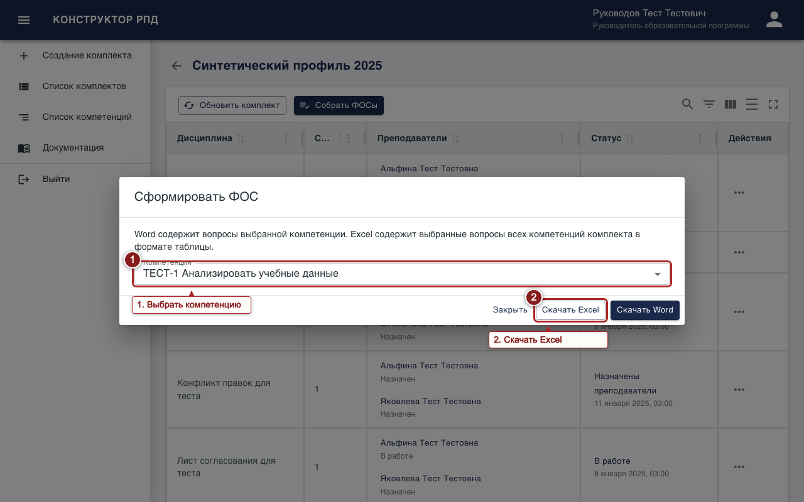
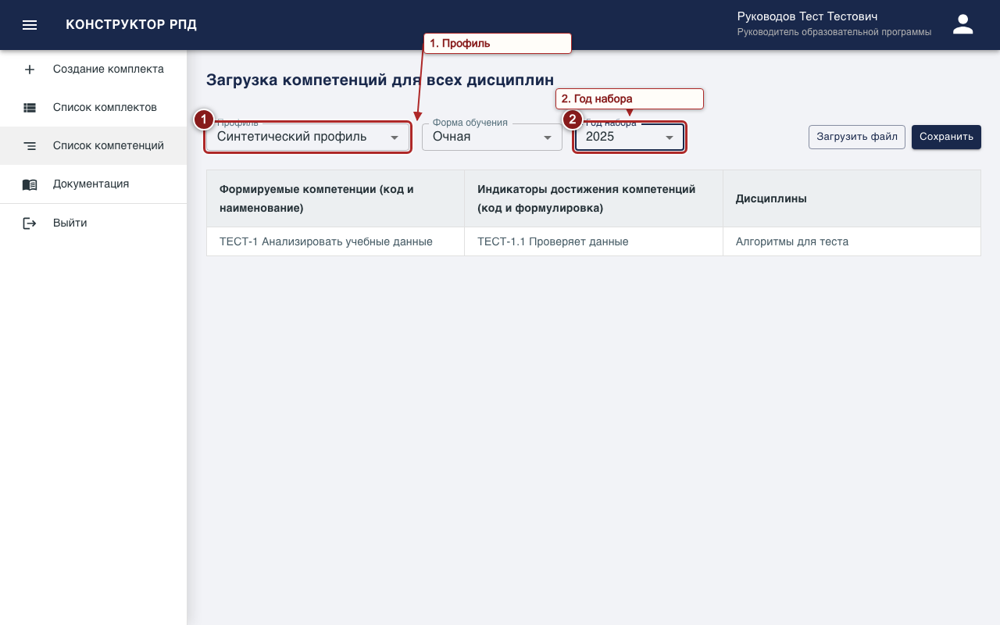
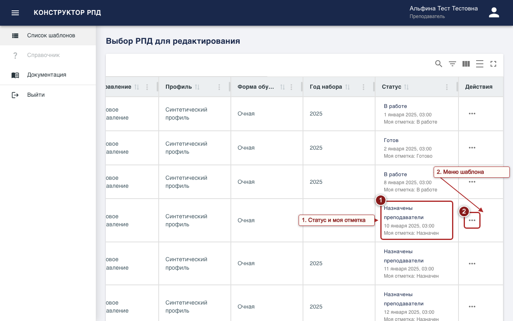
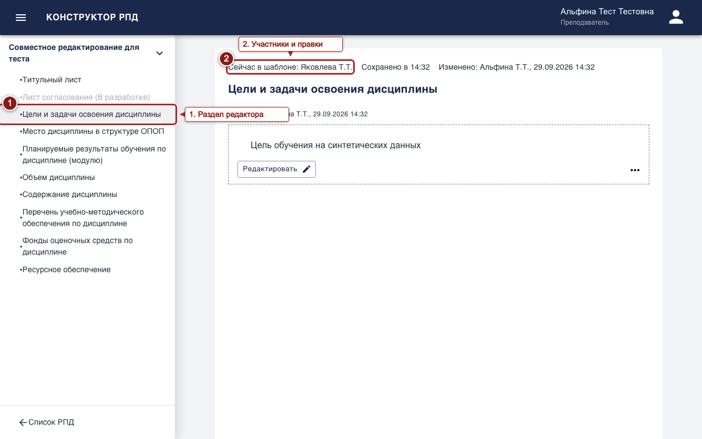
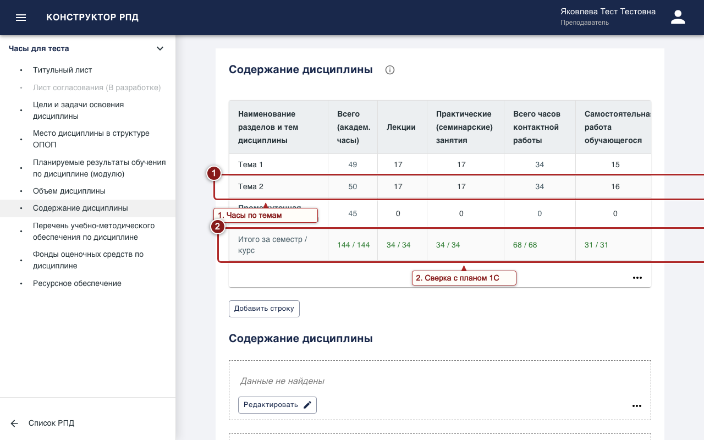
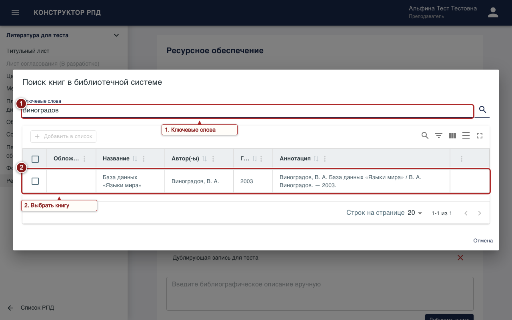
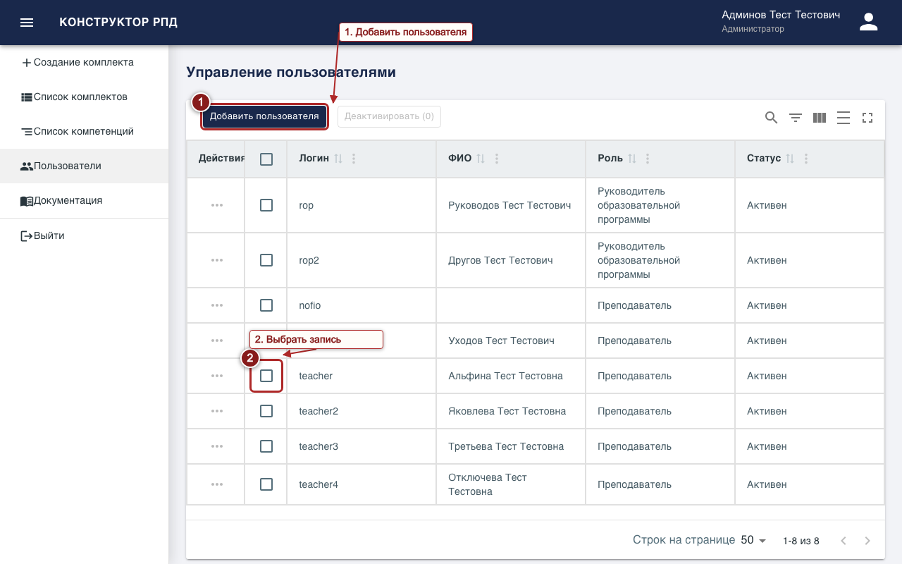

Конструктор РПД
Инструкция по созданию, заполнению и согласованию рабочих программ дисциплин.
Начало работы
Обзор и роли
Конструктор объединяет дисциплины в комплекты РПД. РОП создаёт комплект, назначает преподавателей и проверяет готовые программы. Преподаватель заполняет назначенные РПД. Администратор управляет пользователями и может работать с комплектами.
- Анонимный посетитель (anonymous) видит страницу входа.
- Преподаватель видит назначенные ему шаблоны.
- РОП ведёт свои комплекты и согласует РПД.
- Администратор управляет учётными записями.
РОП
Создание комплекта
- Откройте «Создание комплекта» в боковой панели.
- Последовательно выберите институт, уровень образования, направление, профиль, форму обучения и год набора.
- Нажмите «Продолжить» и проверьте выбранные данные. Кнопка «Назад» возвращает к выбору.
- Нажмите «Создать комплект». После создания выберите «Перейти», чтобы открыть его.
Если комплект с такими параметрами уже существует, откройте его кнопкой «Перейти к редактированию».
Список, обновление и удаление
Откройте «Список комплектов». Кнопка «Комплект РПД» в строке открывает дисциплины, а «Компетенции» — планируемые результаты. Для обновления из 1С выберите один комплект в списке или откройте его и нажмите «Обновить комплект». Загрузите данные из 1С, отметьте нужные изменения и подтвердите применение. Для удаления выберите комплекты в списке, нажмите «Удалить» и подтвердите действие. Пометка «Обновлён» с датой в колонке статуса означает, что последняя синхронизация с 1С что-то изменила.

РПД и преподаватели
В комплекте каждая строка соответствует дисциплине; колонки — «Дисциплина», «Семестр», «Преподаватели», «Статус» и «Действия». Все действия строки собраны в одном меню «Меню шаблона» (значок «…») в колонке «Действия». Для созданной РПД первым стоит «Открыть», затем «Изменить преподавателей», «Импортировать» и «История шаблона», а также «Принять» и «Вернуть на доработку», когда они доступны. Если РПД ещё не создана, в меню — «Создать» и «Назначить преподавателей».
В колонке «Преподаватели» назначенные перечислены списком: полное ФИО и личная отметка — «Назначен», «В работе» или «Готово»; неактивные аккаунты помечены. Состав меняется в диалоге «Преподаватели: …». Откройте его кликом по ФИО или по подчёркнутой строке «Назначить преподавателей» в ячейке либо пунктом «Изменить преподавателей» меню «…». Диалог поделён на два раздела. В разделе «Из 1С» — преподаватели, указанные в 1С для этой дисциплины; если у преподавателя из 1С нет аккаунта, под списком стоит строка «Аккаунт не найден: ФИО» — такой аккаунт должен создать администратор, а если в 1С преподаватели не указаны, раздел так и сообщает: «В 1С преподаватели не указаны». В разделе «Остальные преподаватели» — все прочие аккаунты по алфавиту. Поле поиска фильтрует оба раздела; если в разделе ничего не найдено, там написано «Не найдено». Отметьте флажок нужного преподавателя. Изменения применяются сразу, диалог закрывается кнопкой «Закрыть». В статусе «Готов» состав менять нельзя: сначала верните РПД на доработку.
В колонке «Статус» показаны этап и дата с временем его начала; клик по ним открывает историю шаблона. Ниже, если последняя синхронизация с 1С что-то изменила, стоит «Обновлено из 1С» с датой: клик открывает диалог «Изменения из 1С» с таблицей этих изменений: поле, было, стало; кнопка «Закрыть» его закрывает.


Готовность и согласование
Доступные действия зависят от активной роли. У преподавателя все действия собраны в «Меню шаблона» (значок «…») списка шаблонов: сначала «Взять в работу», затем «Готово», при необходимости — «Снять отметку». Пока РПД не взята в работу, пункта «Готово» нет. Когда все активные назначенные преподаватели отметились, статус становится «Готов». Прогресс по участникам в списках не показывается: у преподавателя под статусом стоит только его собственная отметка.
У РОП эти действия — в меню «…» строки комплекта. Пункт «Принять» позволяет принять РПД раньше, в статусах «Назначены преподаватели», «В работе» или «На доработке», если есть хотя бы один активный преподаватель. После этого статус также становится «Готов». В статусе «Готов» РОП выбирает «Вернуть на доработку» с обязательным комментарием; преподавателям снова потребуется отметить готовность.
Импорт и история
В «Меню шаблона» выберите «Импортировать», затем комплект и готовый шаблон для переноса содержательных полей. Перед подтверждением проверьте, какие данные будут заменены. Пункт «История шаблона» показывает события статусов и назначений: новые события идут сверху, у каждого указаны действие, статус, дата и автор, а у возврата на доработку — комментарий. Ту же историю открывает клик по статусу в списке; правки отдельных полей смотрите в редакторе.
Документы и ФОС
Для отдельной РПД откройте редактор и выберите «Сформировать документ» в боковой панели. Там доступны просмотр и скачивание PDF, а также выгрузка Word.
Для ФОС нажмите «Собрать ФОСы» на странице комплекта. В диалоге «Сформировать ФОС» выберите компетенцию и нажмите «Скачать Word». Кнопка «Скачать Excel» выгружает выбранные вопросы по всем компетенциям комплекта в один файл. Если компетенций нет, сначала загрузите планируемые результаты.

Компетенции
Откройте «Список компетенций» и выберите профиль, форму обучения и год набора, чтобы увидеть результаты выбранного комплекта. Для загрузки нажмите «Загрузить файл», выберите .csv или .xlsx, проверьте таблицу и нажмите «Сохранить».

Комментарии к разделам
В редакторе РОП может добавить комментарий у заголовка раздела: текст вводится в редакторе и сохраняется кнопкой «Сохранить комментарий», у комментария указано ФИО автора. Преподаватель видит комментарий рядом с этим разделом. Если РПД требует исправлений целиком, используйте «Вернуть на доработку» с комментарием.
Преподаватель
Свои РПД
Откройте «Список шаблонов». В таблице видны назначенные РПД. В колонке «Статус» показан общий статус РПД с датой его начала, а ниже — строка «Моя отметка: Назначен», «В работе» или «Готово»; клик по статусу открывает историю шаблона. В колонке «Действия» находится «Меню шаблона» (значок «…»): первым стоит «Открыть», который открывает редактор, затем «История шаблона» и доступные действия — «Взять в работу», после него «Готово» и «Снять отметку». В статусе «Готов» в меню остаются только «Открыть» и «История шаблона».

Редактор и совместная работа
Выберите раздел в боковой панели. Тексты РПД (цели, место дисциплины, дополнительные тексты, ресурсное обеспечение) открываются кнопкой «Редактировать» и сохраняются кнопкой «Сохранить изменения»; «Отменить» закрывает редактор без сохранения. Ячейки таблиц, списки и выбор значений сохраняются при выходе из ячейки.
Внизу боковой панели, над кнопкой «Сформировать документ», показаны статус сохранения («Сохранение…», «Есть несохранённые изменения», «Сохранено в …»), последняя правка шаблона и строка «Сейчас в шаблоне» со списком участников. Под заголовком раздела написано «Изменено: …» — кто и когда правил его последним. Если поле изменилось в учебном плане 1С, над ним показано уведомление «Изменено с учебного плана: …» с последним изменением именно этого поля. Если другой участник изменил то же поле раньше вас, редактор сообщит о конфликте: у текста черновик останется в редакторе — отмените редактирование, чтобы увидеть актуальное значение, и внесите правку заново.

Содержание дисциплины и часы
В разделе «Содержание дисциплины» заполняйте темы и часы. Значок ⓘ «Правила заполнения» у заголовка раздела напоминает, как считаются контактная работа и всего часов и где вводятся часы контроля. Сумма по темам сравнивается с учебным планом 1С: зелёный цвет означает совпадение, красный — расхождение. При расхождении под таблицей появляется предупреждение «Часы не совпадают с учебным планом» с перечнем только несовпавших показателей, например «всего 132 из 144; лекции 22 из 34». Контроль указывают в строке промежуточной аттестации. Данные учебного плана справа могут менять только РОП и администратор. Изменения в ячейке сохраняются при выходе из неё.

Литература
В разделе «Ресурсное обеспечение» нажмите «Найти книги в библиотечной системе», введите ключевые слова, выберите результаты и нажмите «Добавить в список». Если результатов слишком много, уточните запрос автором или годом издания. Библиографическое описание можно также ввести вручную и добавить кнопкой «Добавить книгу».

Вопросы ФОС и готовность
В разделе оценочных средств добавляйте открытые и закрытые вопросы по компетенциям, указывайте ответы и отмечайте вопросы для включения в ФОС. Если выбрать вопросы пока нельзя, проверьте планируемые результаты комплекта. Закончив заполнение, вернитесь к списку РПД, откройте «Меню шаблона» и выберите «Готово»; этот пункт появляется после «Взять в работу». При необходимости отметку можно снять пунктом «Снять отметку», если он доступен.
Администратор
Пользователи
Откройте «Пользователи» в боковой панели. Кнопка «Добавить пользователя» создаёт учётную запись. Чтобы изменить существующую, откройте меню действий строки и выберите «Редактировать». Чтобы закрыть доступ, отметьте активные учётные записи, нажмите «Деактивировать» и подтвердите действие. В меню неактивного пользователя доступна команда «Активировать».
